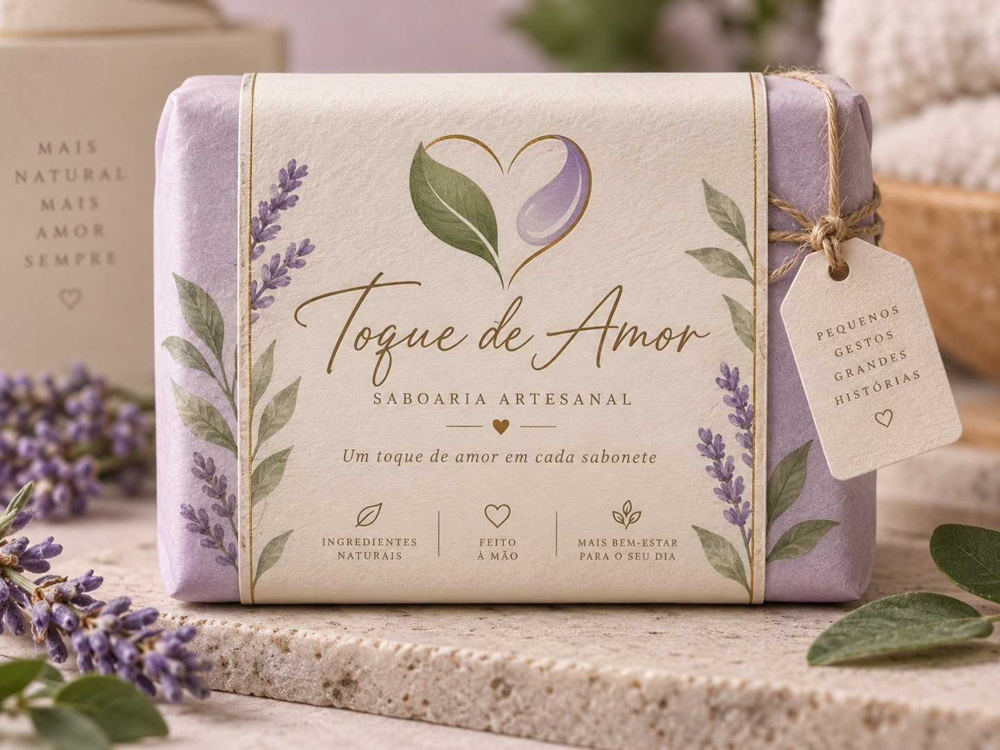
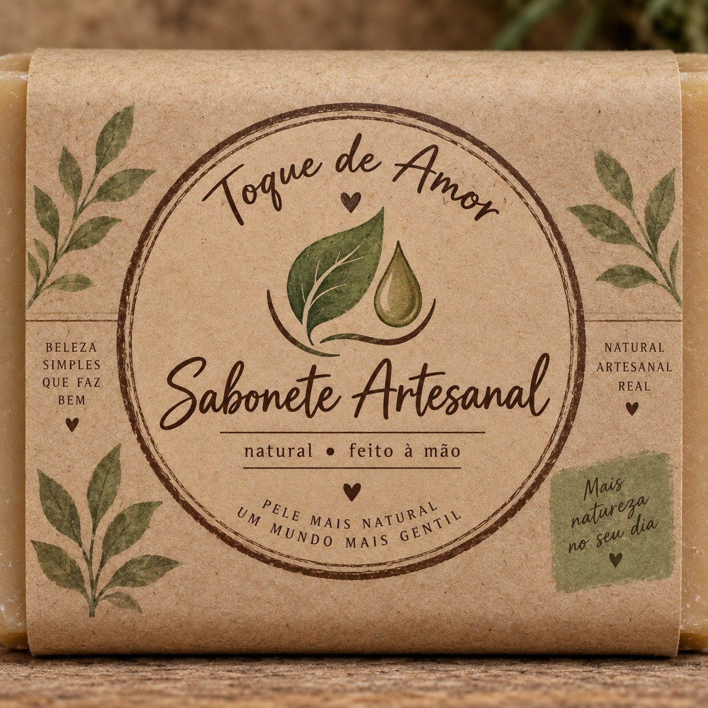
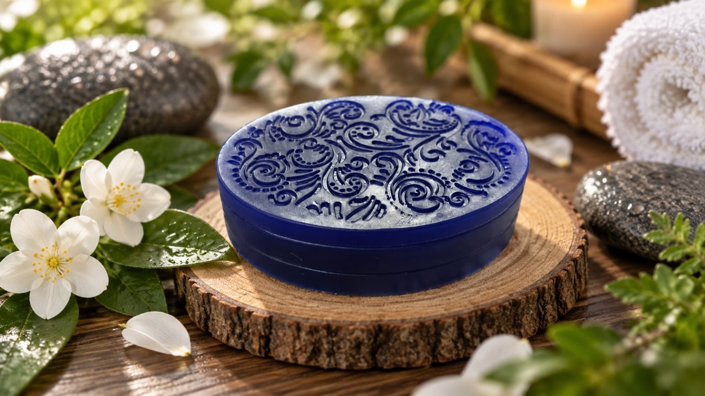
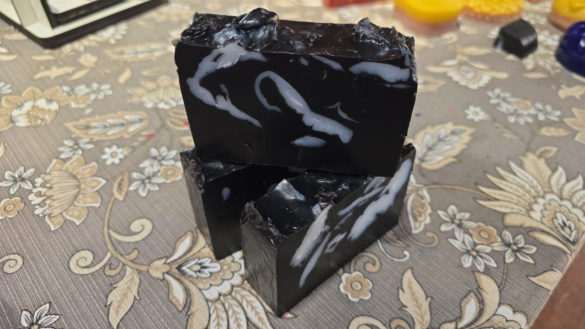
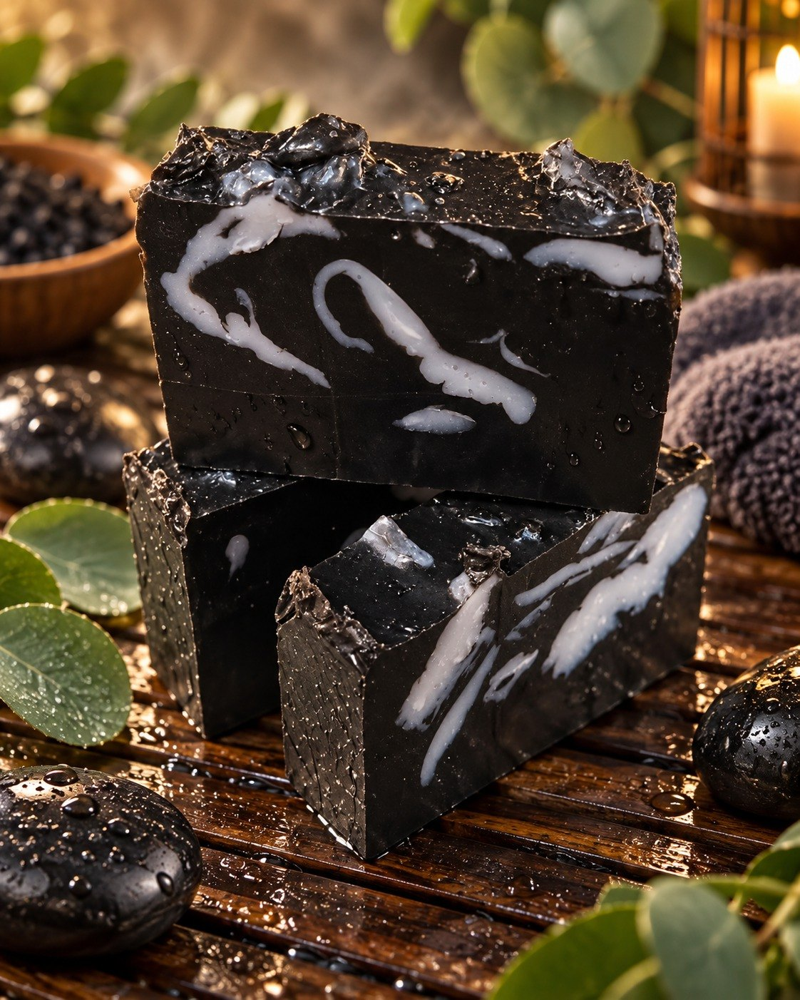
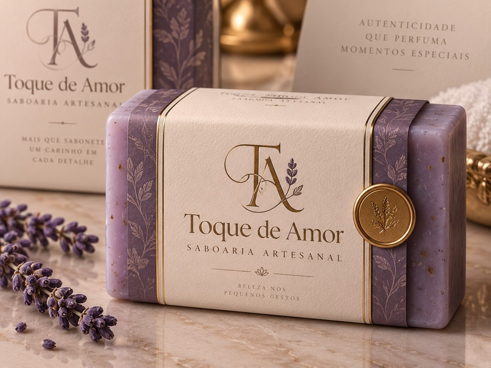
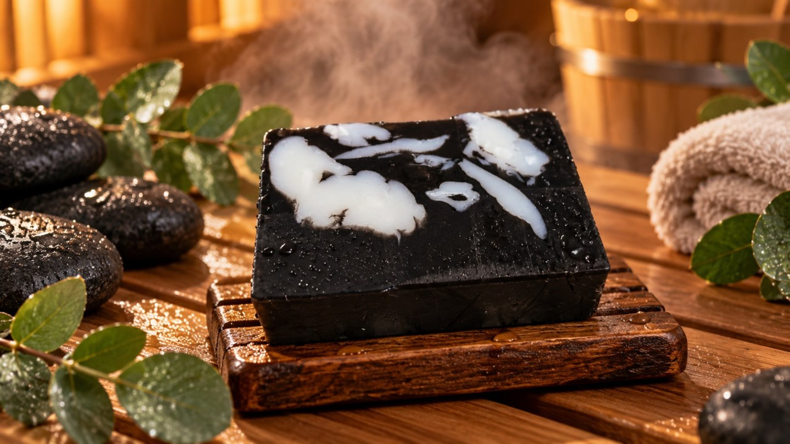

01Seleção dos
Seleção dos
ingredientes.
O cuidado começa nas escolhas. Cores, texturas e combinações dão forma à identidade de cada sabonete.
NATUREZA, CUIDADO & DELICADEZA
Beleza nos pequenos gestos.
Sabonetes artesanais criados para transformar cuidado em experiência.


Acreditamos na beleza que mora nas coisas simples. Em desacelerar. Em transformar um momento cotidiano em um gesto de cuidado.
É desse encontro entre natureza e delicadeza que nasce a Toque de Amor.
Descubra o nosso fazerA BELEZA VEM DO ESSENCIAL

Formas, cores e texturas que convidam a uma pausa. A natureza inspira cada detalhe do nosso universo.
Encontre o seu toque ↗O valor do artesanal está no caminho.
Do primeiro detalhe ao último toque.
O cuidado começa nas escolhas. Cores, texturas e combinações dão forma à identidade de cada sabonete.
Peças que guardam as marcas do fazer à mão. Entre cortes e desenhos, a beleza de não ser tudo igual.

Uma apresentação delicada para abraçar o que foi feito com carinho. Porque o cuidado também está em receber.
03 — UM CONVITE A SENTIR

Pequenos desenhos. Infinitos detalhes.

Escolha o aroma do seu próximo momento.
Um ritual só seu. Um carinho todos os dias.
04 — ENCONTRE O SEU FAVORITO
Cada sabonete carrega um cuidado diferente.
Relevo que encanta.
O azul intenso encontra delicados desenhos florais. Um pequeno objeto de cuidado.

Cada detalhe, um encontro.
Contrastes entre o preto e o branco, em uma composição que torna cada peça singular.
Um carinho para presentear.
Tons suaves e uma apresentação especial, para transformar um gesto em lembrança.
UM CONTRASTE QUE ENCANTA
Força da natureza.
Cuidado em cada detalhe.
O encontro do preto com desenhos claros cria uma presença marcante. Observe de perto: a beleza está nas particularidades de cada peça.
Conheça esse cuidadoCARINHO QUE SE PODE ENTREGAR
O papel, as cores, o laço. Cada detalhe faz parte de uma mesma intenção: tornar o cuidado um gesto especial.
Para alguém querido ou para você. Há sempre um bom motivo para um toque de amor.
Vamos escolher um presente? ↗O SEU PRÓXIMO MOMENTO DE CUIDADO
Conheça nossos sabonetes, descubra os aromas disponíveis e escolha com a gente.
+55 (16) 99175-3408 · @saboaria130